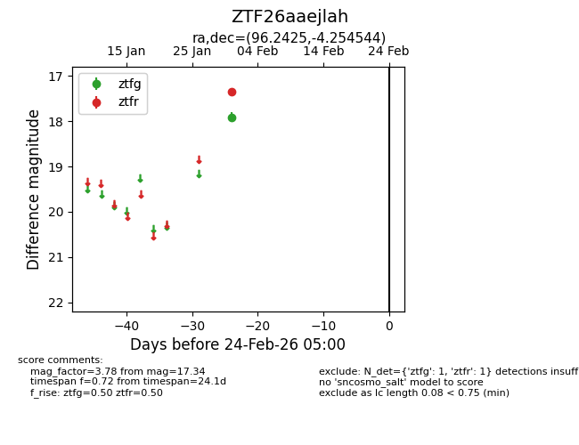
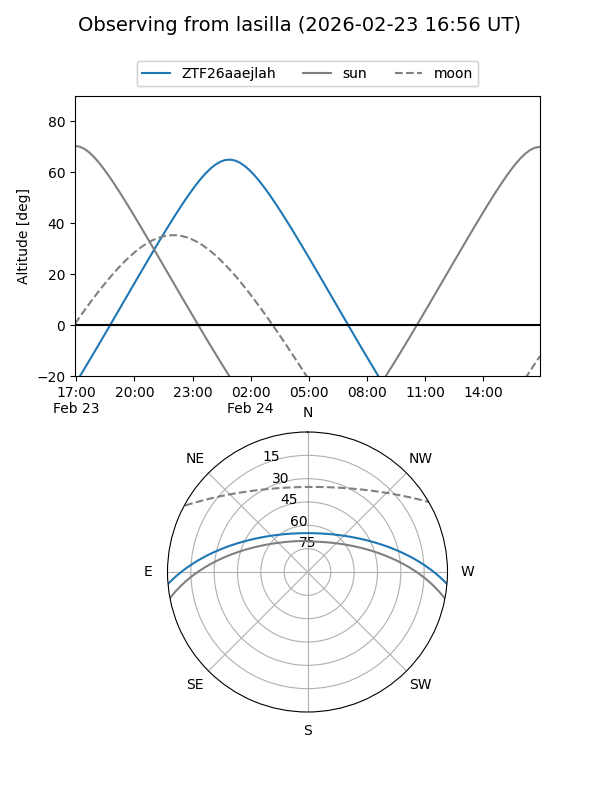
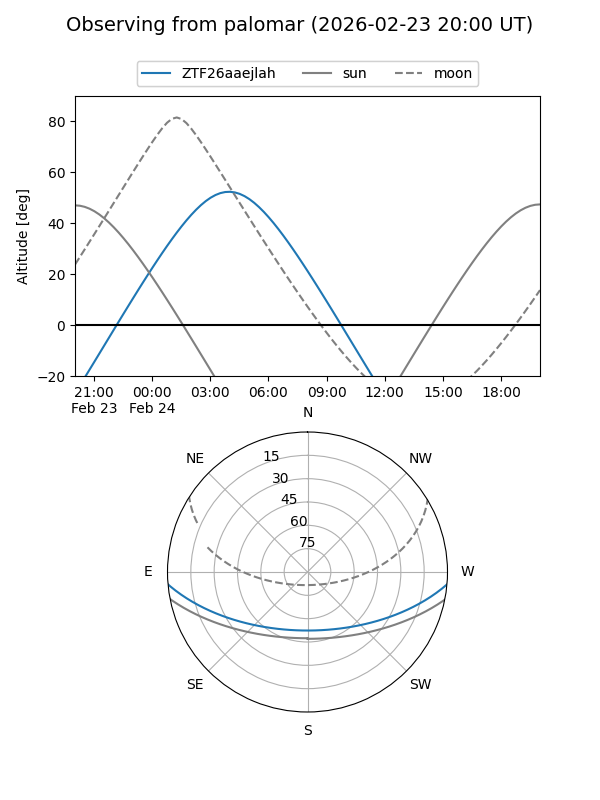

ZTF26aaejlah
Target ZTF26aaejlah at 2026-02-24 09:08
Aliases and brokers:
FINK: link
Lasair: link
ALeRCE: link
alt names
ZTF26aaejlah (ztf,fink_ztf)
Coordinates:
equatorial (ra, dec) = 96.2425,-4.25454
equatorial (HMS+DMS) = 06:24:58.21,-04:15:16.36
galactic (l, b) = (213.7201,-7.82223)
Flags:
Photometry:
last ztfg=17.91, ztfr=17.34
1 ztfg, 1 ztfr detections
Lightcurve

Visibility


Additional plots